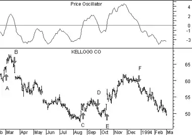

Price Oscillator
Overview
The Price Oscillator displays the difference between two moving averages of a security's price. The difference between the moving averages can be expressed in either points or percentages.The Price Oscillator is almost identical to the MACD, except that the Price Oscillator can use any two user-specified moving averages. (The MACD always uses 12 and 26-day moving averages, and always expresses the difference in points.)
Interpretation
Moving average analysis typically generates buy signals when a short-term moving average (or the security's price) rises above a longer-term moving average. Conversely, sell signals are generated when a shorter-term moving average (or the security's price) falls below a longer-term moving average. The Price Oscillator illustrates the cyclical and often profitable signals generated by these one or two moving average systems.Example
The following chart shows Kellogg and a 10-day/30-day Price Oscillator.  In this example, the Price Oscillator shows the difference between the moving averages as percentages.I drew "buy" arrows when the Price Oscillator rose above zero and "sell" arrows when the indicator fell below zero. This example is typical of the Price Oscillator's effectiveness. Because the Price Oscillator is a trend following indicator, it does an outstanding job of keeping you on the right side of the market during trending periods (as shown by the arrows labeled "B," "E," and "F"). However, during less decisive periods, the Price Oscillator produces small losses (as shown by the arrows labeled "A," "C," and "D").
Calculation
When the Price Oscillator displays the difference between the moving averages in points, it subtracts the longer-term moving average from the shorter-term average:
When the Price Oscillator displays the difference between the moving averages in percentages, it divides the difference between the averages by the shorter-term moving average: